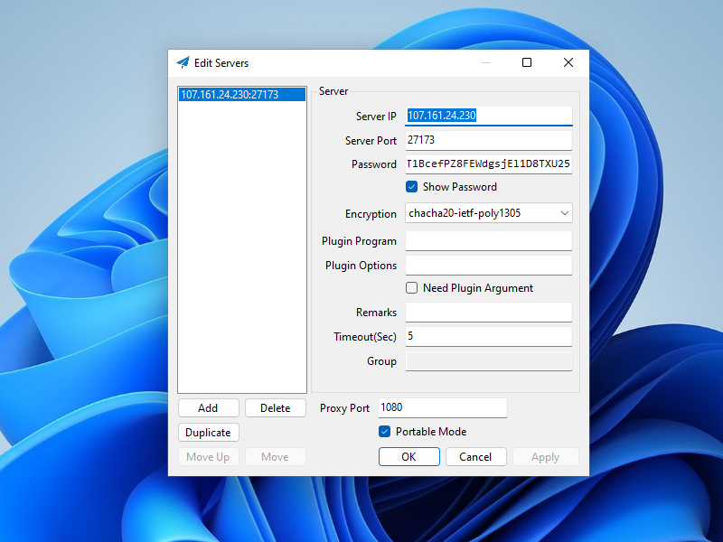

Shadowsocks-Rust on AlmaLinux Using Teddysun Repo
In 2020 Red Hat announced that development of CentOS would be discontinued and support would end earlier than planned. The responses to this news include the launch of AlmaLinux and Rocky Linux, both of which aim for binary compatibility with the current version of Red Hat Enterprise Linux (RHEL). From Red Hat itself comes CentOS Stream, a rolling release used by Red Hat to preview what is intended for inclusion in updates to RHEL.
Some users prefer RHEL-compatible versions of Linux for their stability. This post shows you how to install Shadowsocks-Rust on an AlmaLinux 8 server using the Teddysun repository. With this repository, Shadowsocks-Rust and other proxy servers can be installed with a single command, which will automatically resolve dependencies and do much of the set-up. As well as working on AlmaLinux 8, a similar procedure will also work on Rocky Linux 8 and CentOS Stream 8 plus later releases. For full instructions on the other capabilities of the Teddysun repo, see the original blog post at https://teddysun.com/666.html.
We end this post with installation of a sample Shadowsocks client, which in this example runs the Windows operating system.
1. Server
1.1. Generate Port Number and Password
You will need an unusual port number and a strong password for your Shadowsocks server. First generate a random port number like this:
echo $((1024 + $RANDOM))
The shell function RANDOM gives you a pseudo-random integer between 0 and 32767, so after evaluating the arithmetical expression, you will end up with a port number between 1024 and 33791. In our examples on the rest of this page, we will use the result:
27173
Also generate a random password:
openssl rand -base64 24
The openssl rand -base64 function gives you a random number, expressed in base-64 notation. Because of the argument 24, it will be based
on 24 bytes or 192 bits. The result will have 32 base-64 characters. In our examples on the rest of this page, we will use the result:
kZAHHHT1BcefPZ8FEWdgsjEl1D8TXU25
1.2. Open Firewall
A server firewall is recommended but optional. To install firewalld, issue each of the following commands as root:
yum update
yum install firewalld
systemctl enable firewalld
systemctl start firewalld
You must protect your SSH port! For better security, restrict port 22 access to trusted IP addresses only. For example, if you always log in from IP address
xx.xx.xx.xx, make that is the only IP address that will be trusted for SSH access:
firewall-cmd --zone=trusted --add-source=xx.xx.xx.xx/32
firewall-cmd --zone=trusted --add-service=ssh
firewall-cmd --zone=public --remove-service=ssh
firewall-cmd --zone=public --remove-service=cockpit
firewall-cmd --runtime-to-permanent
Open the port you will use for Shadowsocks:
firewall-cmd --zone=public --add-port=27173/tcp
firewall-cmd --runtime-to-permanent
1.3. Add EPEL Dependency
The Extra Packages for Enterprise Linux (EPEL) repository must be installed first:
yum install yum-utils epel-release
yum-config-manager --enable epel
1.4. Add Teddysun Repo
Run the following command to add teddysun.repo repository:
yum-config-manager --add-repo https://dl.lamp.sh/shadowsocks/teddysun.repo
Issuing the command yum repolist should now include repo id teddysun with repo name Teddysun Linux Repository for EL 8.
To rebuild the repository cache, execute the following command:
yum makecache
List available packages:
yum repo-pkgs teddysun list
The response should now include the packages:
go-shadowsocks2.x86_64libshadowsocks-libev.x86_64shadowsocks-libev.x86_64shadowsocks-libev-devel.x86_64shadowsocks-rust.x86_64v2ray-plugin.x86_64xray-plugin.x86_64
1.5. Install Packages
Install the Shadowsocks-Rust package from the Teddysun repository through yum:
yum install shadowsocks-rust
1.6. Configure Shadowsocks Server
Edit the configuration file /etc/shadowsocks/shadowsocks-rust-config.json using your favorite editor. We will use the vi editor as our
example.
vi /etc/shadowsocks/shadowsocks-rust-config.json
Delete the existing contents and insert the following template:
{
"server": "0.0.0.0",
"server_port": 27173,
"password": "kZAHHHT1BcefPZ8FEWdgsjEl1D8TXU25",
"timeout": 300,
"method": "chacha20-ietf-poly1305",
"mode": "tcp_only",
"fast_open": false
}
Make appropriate changes to the template:
- Change the server port to your generated value
- Change the password to your generated value
- Optionally change the encryption method, using only an AEAD cipher
Write the JSON configuration file to disk, and quit the editor.
1.7. Start Shadowsocks-Rust Server
Start Shadowsocks-Rust after every reboot, and also start it right now:
systemctl enable shadowsocks-rust-server
systemctl start shadowsocks-rust-server
Check that Shadowsocks-Rust is active and running:
systemctl status shadowsocks-rust-server
Check that Shadowsocks-Rust (ssserver) is listening on the expected port, which in our example is port 27173:
ss -tulpn | grep 27173
Your work on the server is done now, so exit your SSH session:
exit
2. Client
Shadowsocks clients are available for Linux, Windows, macOS, Android, iOS, and OpenWRT. We will use Windows in the example that follows.
For simple cases, you can use the C# GUI client for Windows. (For more complex cases using the latest features, you would need to use the command-line client for Windows from https://github.com/shadowsocks/shadowsocks-rust/releases.)
Download and unzip the Windows client from GitHub. At the time of writing,
this is Shadowsocks-4.4.1.0.zip.
Open Windows PowerShell on your PC. Issue the command:
Get-FileHash -Algorithm SHA256 -Path Downloads\Shadowsocks-4.4.1.0.zip
Make sure that the displayed hash for the zip file matches the expected value displayed on GitHub. In our example, that is
62b74a688d22bfdf20f673a351580029d7b9de67c6facc9a5613b22b3f798968.
Once you have verified the file hash, close PowerShell, and unzip the zip file.
Launch and configure the client as follows:
- Launch the program
Shadowsocks.exe. If Windows Defender SmartScreen prevents it from running, then click More info and Run anyway. - On the Edit Servers screen, enter details which match those of the server, and click Apply.
- Click OK.
- The Shadowsocks for Windows C# GUI client continues to run in the system tray. The is the area on the right side of the taskbar, toward the bottom right of your Windows desktop. The Shadowsocks icon looks like a paper airplane.
- Right-click on the Shadowsocks icon to bring up the context menu.
- Select System Proxy and set the value to Global.
- Optionally, confirm that the system proxy is on by going to Settings > Network & Internet > Proxy >
Manual proxy setup. It should show that the proxy server toggle is on, for address
http://localhostand port1080.
Check the end-to-end functionality to confirm that Shadowsocks C# GUI and your system proxy settings are configured correctly. Open a browser and visit one or more of these sites:
In all cases, you should see the IP address of the server, not your local client.
When you are done browsing, quit Shadowsocks from the context menu in the system tray.
3. Get Help and Report Issues
If you discover an issue with Shadowsocks, report it on the official GitHub issues page for the project:
Updated 2022-07-04